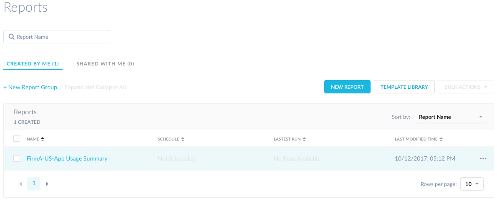

Reports Interface
To open the Reports interface, click Reports in the Netskope admin console. The first time you access reports, you will see the following screen. Subsequent log ins, you will see the main reports list page.

To view the template library, click the Checkout the Template Library tile. To create a a new report, click the Create a New Report from scratch tile. Select how the information in the report is formatted in the report. You can use predefined parameters to create reports, or create custom queries to collect specific data about your cloud app usage. A variety of widgets can be added to a single report.
What's in a Report?
Each report has a template, ad hoc run, and historical runs available.
Templates - Templates define a future run: Name, description, and up to 20 widgets.
Ad-hoc Reports - Use ad-hoc runs to generate a report outside of a regularly scheduled time period using the latest data. Only one ad-hoc run can be stored at a time and is replaced with each ad-hoc run your generate. After the report is generated, you can download the report as a PDF or CSV with your choice of rows (up to 100K), per widget.
Historical Runs - Best practice is to schedule your reports to run automatically and have them emailed to users as a PDF. Up to 10 historical runs can be stored. After the report is generated, you can download the report as a PDF or CSV with your choice of rows (up to 100K).
Sharing Reports
You can share reports with specific report admins, all report admins, or regular users. Note, sharing with regular users, must be set up through Historical Runs.
View or Clone Template - Users can view the definition of the report (template). In addition, you can clone the template to make any edits or save it as your own. It will then appear in the Created by Me reports list.
Independent Run Now - Ad hoc run will be independent for each user it’s been shared with. Ad-hoc is based on the most updated template the report owner defines.
Independent Schedule - Scheduled runs are independent for each user with which the report is shared.
Where Can I Find My Reports?
All reports are in the main reports list page under two tabs, Created by Me and Shared with Me.
Created by Me - All report templates you create or clone appear in this tab.
Shared with Me - All report templates other users share appear in this tab.
Report Templates - Report templates have replaced what was formerly called, Predefined Reports. You can clone any of the report templates, edit, and save as your own template. If you choose to save the template as your own, it will appear in the Created by Me reports list.
To view, edit, or manage an existing report, click the Created By Me header in the Reports list page. Optionally, click Shared With Me to view reports that were not created by you but shared with you. Clone these reports so you can edit and they will appear in the Created By Me list.
|  |
Each report in the list provides the following actions:
sort by report name
sort by schedule
sort by latest run
download a PDF of a specific report, click the PDF icon in the Latest Run column
export a CSV file, click the CSV icon in the Latest Run column (the Reports page only shows the top 100 records in a chart, but the exported CSV file includes all of the data collected for the options screen)
sort by last modified time
select the checkbox next to the report name to perform bulk actions
scroll through report lists and groups
dropdown to display rows per page options
Type a report name to search for reports in the field at the top of the reports list page.
Click +New Report Group to label a common or logical group of reports for easy access. For example, if you have different business units or worldwide locations, you can create a group of reports to automatically run on a schedule based on each business unit's reporting requirements. Report groups can only be reports created or cloned by you.
Additionally, you can rename, delete, or delete group and reports for any report that you have created or cloned. You can also share a report to an email distribution list or an individual.
All reports that are not in groups created by you are listed in the Ungrouped Reports section at the bottom.
Warning
All role based access control permissions apply to these reports. In other words, if the user you are trying to send reports to does not have the right access or view privileges, they cannot view the report, even if you share it with that person or group of people.